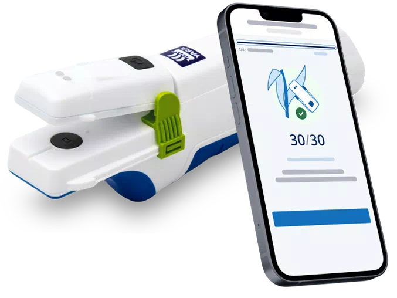
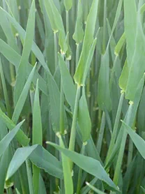
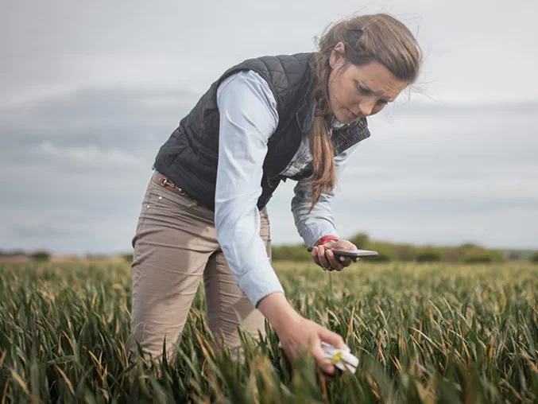
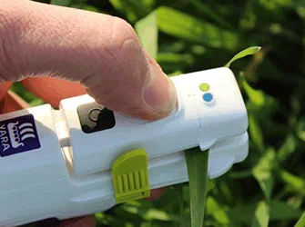
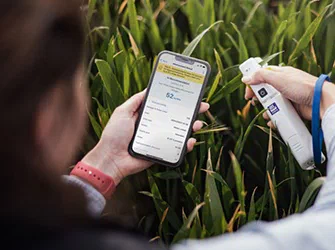
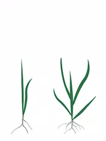
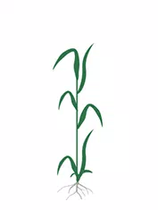

Maximise your return on nitrogen applications
How much nitrogen should you apply to your cereals? Find out with the free N-Tester BT.
Learn more
What can Atfarm’s Nutrition Planner do for you?

QFind out how much nitrogen (N) to apply to your crops this season.
Get your N-Tester BT
Easy and affordable
Maximise return on N applied and improve yield quality with field specific N-rate recommendations based on the real N-uptake of your cereals.
Agronomically robust
The N-Tester BT has been field tested across hundreds of trials and developed by Yara Research & Development for over 25 years.
Calibrated for most cereals
Winter wheat

Winter barley
Spring barley
Winter rye
Winter triticale
When to use the N-Tester BT?
Get N-Rate recommendations based on the N-uptake of your cereals for the 2nd, 3rd and protein dressings.
“Monitoring the crops through the season, with the N-Tester, will give accurate recommendations based on what the nitrogen levels are in the crop. With more accurate rates for each field, the use efficiency will increase, meaning you’re getting the most out of the nitrogen that you are applying.”
Natalie Wood,
Agronomy Operations Manager & Specialist in Crop Nutrition and Digital Tools
Get your N-Tester BT

How does the N-Tester BT work?

The N-Tester BT
The device uses an LED and light sensor to instantly measure the chlorophyll content of a crop when you clamp it onto the newest fully developed leaf of a crop. This green level shows the N content of the plant.
These N-Tester values are automatically sent to your mobile device via Bluetooth™ connection. No internet or cellular signal is needed to record or take measurements.
The Atfarm App
Atfarm uses an algorithm powered by Yara agronomists to calculate the current N balance of your field based on the N-uptake measurements from the N-Tester BT. Decades of field trials by Yara ensure these calculations are accurate.
All you have to do is enter information about your field: crop type, variety, growth stage, target yield estimate, soil N supply, N already applied. After measuring your crops, you get an N recommendation that shows you the exact N needs of your crops.

Your N-rate recommendation
Open the Atfarm app and easily find the N-rate recommendation for your crops (shown in kilos of nitrogen per hectare).
The N-rate recommendations from the N-Tester BT are designed to help fine-tune N-applications during the growing season and help you maximise the yield return for every kilo of N you apply.
Get your N-Tester BT
Calibrated for most cereals

Tillering
1st application
Stem elongation
2nd application

Flag leaf development
3rd application
Spike development
Protein dressing
WHarvest
Get your N-Tester BT
Optimise N use on your fields in 8 steps
1
Turn your N-Tester BT on by holding the On/Off button until the LED on top turns blue.
2
Open the Atfarm app and select your farm and field.
3
Scroll down to the N-Tester section and tap Start measurement.
4
Add your crop and growth stage information.
5
Tap Start measuring. The app will now check the connection between your smartphone and N-Tester BT. This may take a few seconds.
6
Calibrate your N-Tester by holding down the head of the device and taking an empty reading.
7
Measure the youngest leaves on at least 30 plants across your field.
8
Tap Get the N-Tester value. Take measurements while walking across your field in a zig-zag pattern. This helps you get readings from crops growing in all the different soil qualities in your field.